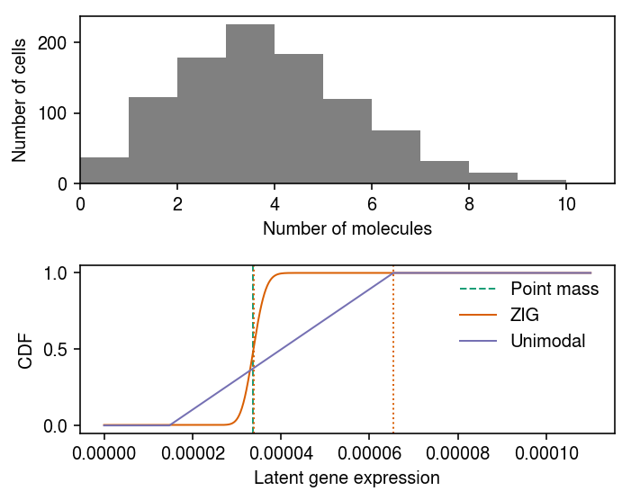
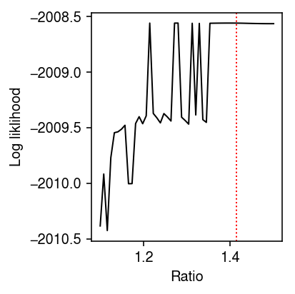
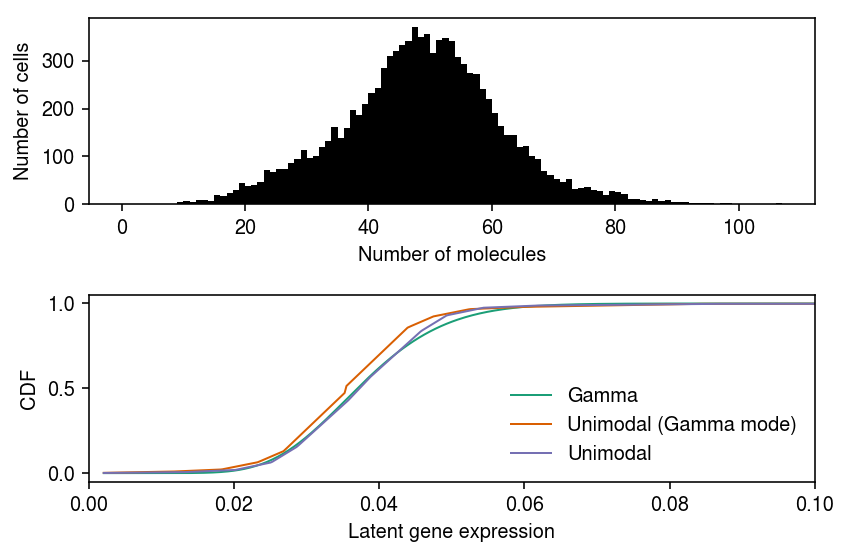

Speed up ash mode estimation
Table of Contents
Introduction
We want to deconvolve scRNA-seq data assuming \(g_j\) is some unimodal distribution over non-negative reals. In practice, we represent this family of distribution as
\[ g_j = \sum_{k=1}^K \pi_k \mathrm{Uniform}(\cdot; \lambda_0, a_{jk}) \]
where \(K\) is sufficiently large and \(\lambda_0\) is the mode (Stephens 2016).
To estimate the mode \(\lambda_{0j}\) for gene \(j\), we find:
\[ \lambda_{0j}^* = \arg\max_{\lambda_{0j}} \sum_i \int f(x_i \mid \lambda_i) g_j(\lambda_i \mid \pi, \lambda_{0j})\ d\lambda_i \]
using golden section search. Here, we investigate practical issues in this approach.
Setup
import functools as ft import multiprocessing as mp import numpy as np import pandas as pd import scipy.stats as st import scipy.special as sp import scmodes import scqtl import sklearn.model_selection as skms import rpy2.robjects.packages import rpy2.robjects.pandas2ri import rpy2.robjects.numpy2ri rpy2.robjects.pandas2ri.activate() rpy2.robjects.numpy2ri.activate() ashr = rpy2.robjects.packages.importr('ashr') descend = rpy2.robjects.packages.importr('descend')
%matplotlib inline %config InlineBackend.figure_formats = set(['retina'])
import colorcet import matplotlib.pyplot as plt plt.rcParams['figure.facecolor'] = 'w' plt.rcParams['font.family'] = 'Nimbus Sans'
Results
Convexity
As an example, use the highest expressed genes in 10K sorted CD8+ cytotoxic T cells Zheng et al. 2017.
x = scmodes.dataset.read_10x('/project2/mstephens/aksarkar/projects/singlecell-ideas/data/10xgenomics/cytotoxic_t/filtered_matrices_mex/hg19') xj = pd.Series(x[:,x.mean(axis=0).argmax()]) size_factor = pd.Series(x.sum(axis=1)) lam = xj / size_factor

Mengyin Liu claimed this problem is convex in \(\lambda_{0j}\), However, on the above example, the quality of the result depends on the bounds of the search. Is this problem actually convex?
By default, the bounds are \([\min(x_i), \max(x_i)]\), which can be extremely large. However, we need to remove the scaling factor, so should we instead search over \([\min(x_i / R_i), \max(x_i / R_i)]\)? The motivation for the proposed alternative is to only look over plausible values of \(\lambda_i\).
grid = np.geomspace(1e-3, xj.max(), 100) llik = np.array([np.array( ashr.ash( pd.Series(np.zeros(xj.shape)), 1, lik=ashr.lik_pois(y=xj, scale=size_factor, link='identity'), mode=lam0, outputlevel='loglik').rx2('loglik')) for lam0 in grid]).ravel()
res0 = ashr.ash( pd.Series(np.zeros(xj.shape)), 1, lik=ashr.lik_pois(y=xj, scale=size_factor, link='identity'), mode='estimate') res1 = ashr.ash( pd.Series(np.zeros(x.shape[0])), 1, lik=ashr.lik_pois(y=xj, scale=size_factor, link='identity'), mode=pd.Series([lam.min(), lam.max()]))
plt.clf() plt.gcf().set_size_inches(3, 3) plt.xscale('log') plt.plot(grid, np.array(llik).ravel(), lw=1, c='k') plt.axvline(x=np.array(res0.rx2('fitted_g').rx2('a'))[0], c='k', lw=1, ls=':', label='Default') plt.axvline(x=np.array(res1.rx2('fitted_g').rx2('a'))[0], c='r', lw=1, ls=':', label='Restricted') plt.legend(frameon=False, loc='center left', bbox_to_anchor=(1, .5)) plt.xlabel('Mode $\lambda_0$') _ = plt.ylabel('Marginal likelihood')

It appears the problem is actually non-convex. Surprisingly, it appears non-convex even for a case where the data are not bimodal. For bimodal data, we might expect that choice of the mode would change the weight on/near zero and result in a non-convex objective.
According to the documentation, the search can fail for poor choice of initial query, which depends entirely on the initial interval. In this example, the initial interval does not contain the mode, and therefore the search finds the correct local optimum within the interval, but fails to find the global optimum.
This result does not necessarily mean that our proposed alternative, to search over \([\min(x_i / R_i), \max(x_i / R_i)]\) will work, because Poisson noise could mean the true \(\lambda_i > x_i / R_i\) for some sample \(i\).
Should we search further to be reasonably certain we haven't missed the mode? Intuitively, the largest \(\hat\lambda_i\) value we do observe should be "overestimated"; if it were not, then we should expect higher density of \(g\) around it, and values larger than it in the observed data.
Speed
We have to solve an ash subproblem for each query \(\lambda_0\), which
becomes extremely expensive for large data sets. We can speed up the
procedure by downsampling the data for mode estimation. How much worse is the
fitted model?
def score_mode_estimation(data, seed=0, p=0.1): temp = data.sample(random_state=seed, frac=p) res0 = ashr.ash( pd.Series(np.zeros(temp.shape[0])), 1, lik=ashr.lik_pois(y=temp['x'], scale=temp['scale'], link='identity'), mode=pd.Series([temp['lam'].min(), temp['lam'].max()])) lam0 = np.array(res0.rx2('fitted_g').rx2('a'))[0] res = ashr.ash( pd.Series(np.zeros(data.shape[0])), 1, lik=ashr.lik_pois(y=data['x'], scale=data['scale'], link='identity'), mode=lam0) return lam0, np.array(res.rx2('loglik'))[0] def evaluate_mode_estimation(data, num_trials): result = [] for p in (0.1, 0.25, 0.5): for trial in range(num_trials): lam0, llik = score_mode_estimation(data, seed=trial, p=p) result.append([p, trial, lam0, llik]) result = pd.DataFrame(result, columns=['p', 'trial', 'lam0', 'llik']) return result
mode_estimation_result = evaluate_mode_estimation(pd.DataFrame({'x': xj, 'scale': size_factor, 'lam': lam}), num_trials=10)
plt.clf() plt.gcf().set_size_inches(3, 3) plt.scatter(mode_estimation_result['p'], mode_estimation_result['llik'], s=4, c='k') plt.axhline(y=np.array(res1.rx2('loglik'))[0], c='k', lw=1, ls=':') plt.xlabel('Fraction of original data') plt.ylabel('Training log likelihood')
Text(0, 0.5, 'Training log likelihood')

Downsampling is likely to result in a much worse model fit, so we should not pursue that strategy to speed up the model estimation.
Using a simpler model
We previously found an example of near-Poisson data where ash mode estimation fails.
data, _ = scqtl.simulation.simulate(num_samples=1000, logodds=-5, seed=2) x = pd.Series(data[:,0]) s = pd.Series(data[:,1]) lam = x / s
Plot the data.

Fit \(g\) assuming a point mass \(\mu\).
fit0 = scqtl.simple.fit_pois(x, s)
Fit \(g\) assuming Gamma.
\[ \lambda_i \sim \operatorname{Gamma}(1/\phi, 1/(\mu\phi)) \]
# Important: this returns mu, 1/phi fit1 = scqtl.simple.fit_nb(x, s)
Report the estimated modes and log likelihoods.
# Important: Gamma(a, b) mode is max((a - 1) / b, 0) pd.DataFrame({'mode': [fit0[0], fit1[0] * (fit1[1] - 1) / fit1[1]], 'llik': [fit0[-1], fit1[-1]]}, index=['pointmass', 'gamma'])
mode llik pointmass 0.000034 -2008.663140 gamma 0.000033 -2008.503731
The unimodal distribution is parameterized:
\[ g = \sum_{k=1}^{K} w_k \operatorname{Uniform}(\lambda_0, \lambda_0 \pm a_k) \]
where we abuse notation for brevity, and the endpoints \(a_k\) follow a geometric series. Fix the mode to the Gamma mode, and fit unimodal \(g\) for different choices of ratio between successive endpoints.
ratio = np.linspace(1.1, 1.5, 50) res = [] for r in ratio: low = 1 / s.mean() high = (x / s).max() mixsd = pd.Series(np.exp(np.arange(np.log(low), np.log(high), step=np.log(r)))) fit = ashr.ash_workhorse( pd.Series(np.zeros(x.shape)), 1, lik=ashr.lik_pois(y=x, scale=s, link='identity'), mixsd=mixsd, mode=fit1[0] * (fit1[1] - 1) / fit1[1], output=pd.Series(['loglik', 'fitted_g'])) res.append([r, np.array(fit.rx2('loglik'))[0], np.array(fit.rx2('fitted_g').rx2('pi'))[0]]) res = pd.DataFrame(res) res.columns = ['ratio', 'llik', 'pi0']
Plot the log likelihood versus chosen ratio. Mark the location of ratio \(\sqrt{2}\).
plt.clf() plt.gcf().set_size_inches(3, 3) plt.plot(res['ratio'], res['llik'], lw=1, c='k') plt.axvline(x=np.sqrt(2), ls=':', c='r', lw=1) plt.xlabel('Ratio') plt.ylabel('Log liklihood') plt.tight_layout()

Report the ratio which achieves the best log likelihood.
res.loc[res['pi0'].idxmax()]
ratio 1.434694 llik -2008.561414 pi0 0.966383 Name: 41, dtype: float64
Try applying this approach to the highest expressed genes in 10K sorted CD8+ cytotoxic T cells Zheng et al. 2017.
x = scmodes.dataset.read_10x('/project2/mstephens/aksarkar/projects/singlecell-ideas/data/10xgenomics/cytotoxic_t/filtered_matrices_mex/hg19', return_df=True) xj = x[x.mean(axis=0).idxmax()] s = x.sum(axis=1) lam = xj / s
Fit Gamma, and test for goodness of fit.
init = scqtl.simple.fit_nb(xj, s)
scmodes.benchmark.gof._gof(
xj.values.ravel(),
cdf=scmodes.benchmark.gof._zig_cdf,
pmf=scmodes.benchmark.gof._zig_pmf,
size=s.values.ravel(),
log_mu=np.log(init[0]),
log_phi=-np.log(init[1]))
KstestResult(statistic=0.0186349904442156, pvalue=0.0016661060591321017)
Fit unimodal, and test for goodness of fit.
fit = ashr.ash_workhorse( pd.Series(np.zeros(xj.shape)), 1, lik=ashr.lik_pois(y=xj, scale=s, link='identity'), mixsd=pd.Series(np.exp(np.arange(np.log(1 / s.mean()), np.log((xj / s).max()), step=.5 * np.log(2)))), mode=init[0] * (init[1] - 1) / init[1], output=pd.Series(['loglik', 'fitted_g', 'data'])) scmodes.benchmark.gof._gof(xj, cdf=scmodes.benchmark.gof._ash_cdf, pmf=scmodes.benchmark.gof._ash_pmf, fit=fit, s=s)
KstestResult(statistic=0.059205028160045026, pvalue=1.6543190838957947e-31)
Previously, we found full mode search worked on this example.
fit_estmode = ashr.ash_workhorse( pd.Series(np.zeros(xj.shape)), 1, lik=ashr.lik_pois(y=xj, scale=s, link='identity'), mixsd=pd.Series(np.exp(np.arange(np.log(1 / s.mean()), np.log((xj / s).max()), step=.5 * np.log(2)))), mode=pd.Series([lam.min(), lam.max()]), output=pd.Series(['loglik', 'fitted_g', 'data'])) scmodes.benchmark.gof._gof(xj, cdf=scmodes.benchmark.gof._ash_cdf, pmf=scmodes.benchmark.gof._ash_pmf, fit=fit, s=s)
KstestResult(statistic=0.06007936493401578, pvalue=1.966951261262836e-32)
Report the marginal log likelihood of the fits.
pd.Series({
'gamma': init[-1],
'unimodal (gamma mode)': np.array(fit.rx2('loglik'))[0],
'unimodal': np.array(fit_estmode.rx2('loglik'))[0]})
gamma -41349.739021 unimodal (gamma mode) -41409.282482 unimodal -41274.359548 dtype: float64
Plot the data, and the fitted distributions.
grid = pd.Series(np.linspace(lam.min(), lam.max(), 1000)) gamma_cdf = st.gamma(a=init[1], scale=init[0] / init[1]).cdf(grid) unimodal_cdf = np.array(ashr.cdf_ash(fit, grid).rx2('y')).ravel() estmode_cdf = np.array(ashr.cdf_ash(fit_estmode, grid).rx2('y')).ravel()
cm = plt.get_cmap('Dark2') plt.clf() fig, ax = plt.subplots(2, 1) fig.set_size_inches(6, 4) ax[0].hist(xj.values, bins=np.arange(xj.values.max() + 1), color='k') ax[0].set_xlabel('Number of molecules') ax[0].set_ylabel('Number of cells') for i, (k, F) in enumerate(zip(['Gamma', 'Unimodal (Gamma mode)', 'Unimodal'], [gamma_cdf, unimodal_cdf, estmode_cdf])): ax[1].plot(grid, F, c=cm(i), label=k, lw=1) ax[1].set_xlim(0, 0.1) ax[1].legend(frameon=False) ax[1].set_xlabel('Latent gene expression') ax[1].set_ylabel('CDF') fig.tight_layout()
